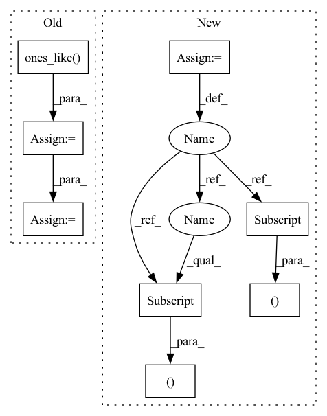

Pattern ID :8304
Before Change
def loss_unknown_structure(self, seq, pairs, score_paired, score_unpaired, pred_bp):
pred_unpaired = torch.ones_like( score_unpaired, dtype=torch.bool)
print(torch.max(score_paired[1:, 1:]))
for i, j in enumerate(pred_bp):
if i < j:
pred_unpaired[i] = pred_unpaired[j] = False
score_unpaired = score_unpaired[1:]
score_paired = 1 - score_unpaired
pred_unpaired = pred_unpaired[1:]
//print(pred_bp)
//print(score_paired)After Change
// print(score_unpaired)
score_paired = 1 - score_unpaired
//print(pred_bp)
pairs_not_nan = torch.logical_not(torch.isnan(pairs))
loss = torch.sum(pairs[pairs_not_nan[:, 0] , 0 ] * score_unpaired[pairs_not_nan[:, 0]])
loss += torch.sum(pairs[pairs_not_nan[:, 1] , 1 ] * score_paired[pairs_not_nan[:, 1]])
return loss
In pattern: SUPERPATTERN
Frequency: 3
Non-data size: 8
Instances Fragment ID: 29077808
Project Name: keio-bioinformatics/mxfold2
Commit Name: 307eec16f1b4f6b77b0950411d034a4289fb83b0
Time: 2020-01-06
Author: satoken@bio.keio.ac.jp
File Name: dnnfold/train.py
M Class Name: PiecewiseLoss
N Class Name: PiecewiseLoss
M Method Name: loss_unknown_structure(6)
N Method Name: loss_unknown_structure(6)
M Parent Class: nn.Module
N Parent Class: nn.Module
M File Name: dnnfold/train.py
N File Name: dnnfold/train.py
M Start Line: 126
M End Line: 140
N Start Line: 133
N End Line: 135
Before Change
def loss_unknown_structure(self, seq, pairs, score_paired, score_unpaired, pred_bp):
pred_unpaired = torch.ones_like( score_unpaired, dtype=torch.bool)
print(torch.max(score_paired[1:, 1:]))
for i, j in enumerate(pred_bp):
if i < j:
pred_unpaired[i] = pred_unpaired[j] = False
score_unpaired = score_unpaired[1:]
score_paired = 1 - score_unpaired
pred_unpaired = pred_unpaired[1:]
//print(pred_bp)
//print(score_paired)After Change
// print(score_unpaired)
score_paired = 1 - score_unpaired
//print(pred_bp)
pairs_not_nan = torch.logical_not(torch.isnan(pairs))
loss = torch.sum(pairs[pairs_not_nan[:, 0], 0 ] * score_unpaired[pairs_not_nan[:, 0]])
loss += torch.sum(pairs[pairs_not_nan[:, 1], 1 ] * score_paired[pairs_not_nan[:, 1]])
return loss
Fragment ID: 29077803
Project Name: mxfold/mxfold2
Commit Name: 307eec16f1b4f6b77b0950411d034a4289fb83b0
Time: 2020-01-06
Author: satoken@bio.keio.ac.jp
File Name: dnnfold/train.py
M Class Name: PiecewiseLoss
N Class Name: PiecewiseLoss
M Method Name: loss_unknown_structure(6)
N Method Name: loss_unknown_structure(6)
M Parent Class: nn.Module
N Parent Class: nn.Module
M File Name: dnnfold/train.py
N File Name: dnnfold/train.py
M Start Line: 126
M End Line: 140
N Start Line: 133
N End Line: 135
Before Change
Vector y(t).
// Get cumulative slope and intercept at each t
k_t = k * np.ones_like( t)
m_t = m * np.ones_like(t)
// Intercept changes
if deltas is not None and changepoints_t is not None:
gammas = -changepoints_t * deltas
for s, t_s in enumerate(changepoints_t):
indx = t >= t_s
k_t[indx] += deltas[s]
m_t[indx] += gammas[s]
return k_t * t + m_t
After Change
print("WARNING: deprecated, might contain bug.")
t = np.squeeze(t)
past_changepoint = np.expand_dims(t, 1) >= np.expand_dims(changepoints_t, 0)
segment_id = np.sum(past_changepoint, axis=1) - 1
k_t = np.ones((len(t), 1)) * np.expand_dims(k, 0)
m_t = np.ones((len(t), 1)) * np.expand_dims(m, 0)
k_t = np.squeeze(k_t[np.arange(len(t)), segment_id ])
m_t = np.squeeze(m_t[np.arange(len(t)), segment_id ])
trend = k_t * t + m_t
return trend Fragment ID: 29077800
Project Name: ourownstory/neural_prophet
Commit Name: 8dcdd6a5e564ef4412c327d2550025a5647b63a6
Time: 2020-05-22
Author: oskar.triebe@merantix.com
File Name: code/utils.py
M Class Name: AnonimousClass
N Class Name: AnonimousClass
M Method Name: piecewise_linear(4)
N Method Name: piecewise_linear(5)
M Parent Class:
N Parent Class:
M File Name: code/utils.py
N File Name: code/utils.py
M Start Line: 21
M End Line: 47
N Start Line: 51
N End Line: 62